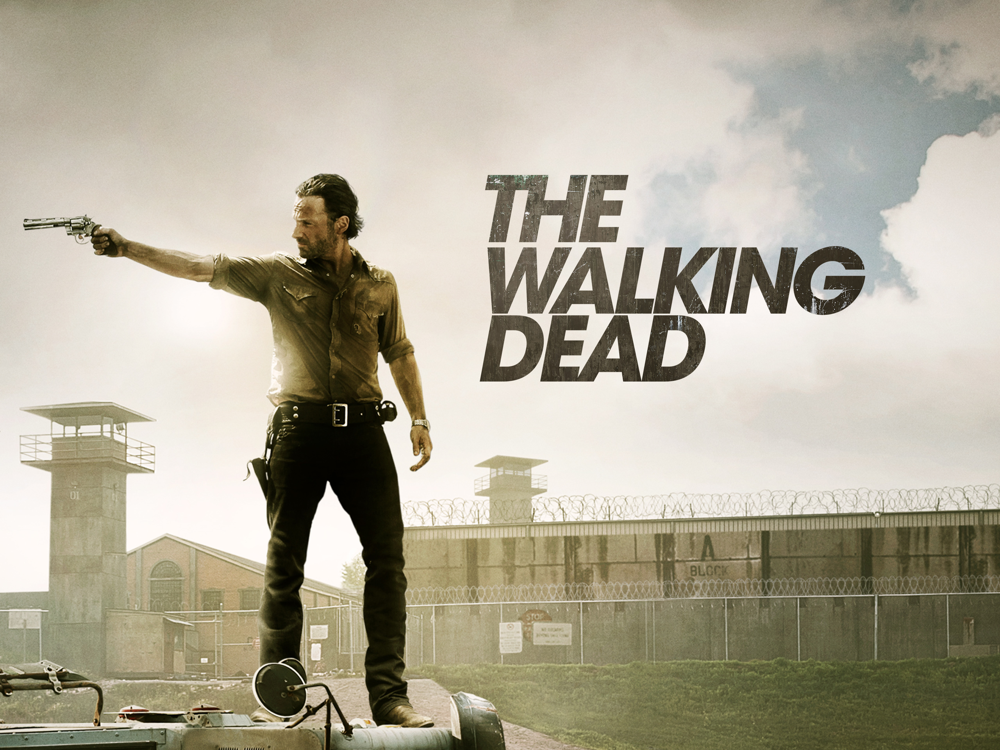

Sinopsis

Esta serie cuenta actualmente con 10 temporadas. Trata sobre un grupo de supervivientes liderados por Rick Grimes, un ex alguacil, que intenta sobrevivir en un mundo devastado por un apocalipsis zombi. A lo largo de la historia, los personajes deben enfrentar tanto a los caminantes (zombis) como a otros grupos humanos que representan un peligro aún mayor. Es una historia sobre la humanidad, la moralidad y la lucha por seguir con vida.